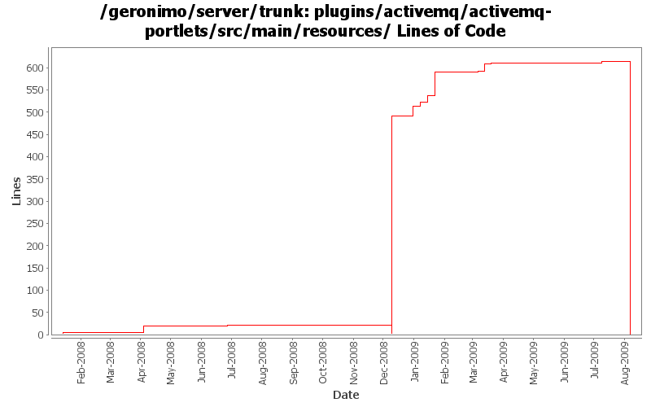

[root]/plugins/activemq/activemq-portlets/src/main/resources

| Author | Changes | Lines of Code | Lines per Change |
|---|---|---|---|
| Totals | 54 (100.0%) | 746 (100.0%) | 13.8 |
| dwoods | 32 (59.3%) | 714 (95.7%) | 22.3 |
| xuhaihong | 12 (22.2%) | 22 (2.9%) | 1.8 |
| gawor | 6 (11.1%) | 9 (1.2%) | 1.5 |
| djencks | 4 (7.4%) | 1 (0.1%) | 0.2 |
GERONIMO-4763 i18n properties files should be converted to ascii at build time. (Patch from Shawn Jiang)
0 lines of code changed in 8 files:
some more i18n work. Patch from Kan Ogawa (GERONIMO-4717)
4 lines of code changed in 2 files:
GERONIMO-4454 JMS Resources - Destination stats not suported with new AMQ5
2 lines of code changed in 2 files:
GERONIMO-4517 Apply unified message display style(G-4484) to javascript alert messages. Together with the localization of these messages. Thanks for the patch, Gang Yin
20 lines of code changed in 2 files:
GERONIMO-4550 No error message displays in console when fail to create jms resource. Patch from Gang Yin.
8 lines of code changed in 2 files:
minor rb updates
2 lines of code changed in 1 file:
some spell checking
1 lines of code changed in 1 file:
GERONIMO-4475 Improve JMS portlet for Borker configuration. Applied 4 patches from Ivan.
55 lines of code changed in 4 files:
GERONIMO-4474 Pull out the text in the JSP files to resource bundle files. Applied jsp-localization-tomcat6-connector.patch, jsp-localization-securityrealm.patch and jsp-localization-activemq-ra.patch from Gang Yin.
14 lines of code changed in 2 files:
GERONIMO-4507 Admin console should honor the priority of user agent's language setting. Applied patch from Gang Yin.
0 lines of code changed in 2 files:
GERONIMO-4484 Extraction, localization and display of messages generated in portlets. Applied common-message-openejb.patch, common-message-activemq.patch, common-message-debugviews.patch, common-message-plancreator.patch and common-message-sysdb.patch from Gang Yin. Also updated 2 console-testsuite DB tests to match modified message strings.
10 lines of code changed in 2 files:
GERONIMO-4474 Pull out the text in the JSP files to resource bundle files. Patches provided by Gang Yin.
121 lines of code changed in 4 files:
GERONIMO-4337 update portlet properties to use the prior activemq-* names
0 lines of code changed in 2 files:
GERONIMO-4337 rename AMQ5 modules to old names that apps expect
471 lines of code changed in 4 files:
GERONIMO-4337 rename AMQ5 modules to old names that apps expect
18 lines of code changed in 4 files:
GERONIMO-4337 remove old AMQ4 based modules
0 lines of code changed in 4 files:
GERONIMO-3983 Update JMS Resource portlet to show the Destination statistics. Thanks Anish for the patch.
2 lines of code changed in 1 file:
GERONIMO-3819 Update JMS Resources Portlet. Patch from Anish Pathadan.
15 lines of code changed in 1 file:
fix parameter name
1 lines of code changed in 1 file:
remove duplicated content and fix spelling mistakes
1 lines of code changed in 1 file:
GERONIMO-1775 2nd internationalization patch from YunFeng Ma, with some spelling corrections
0 lines of code changed in 2 files:
GERONIMO-1775 apply 2nd patch. Console-testsuite passes for me and I didn't see any problems
1 lines of code changed in 2 files: